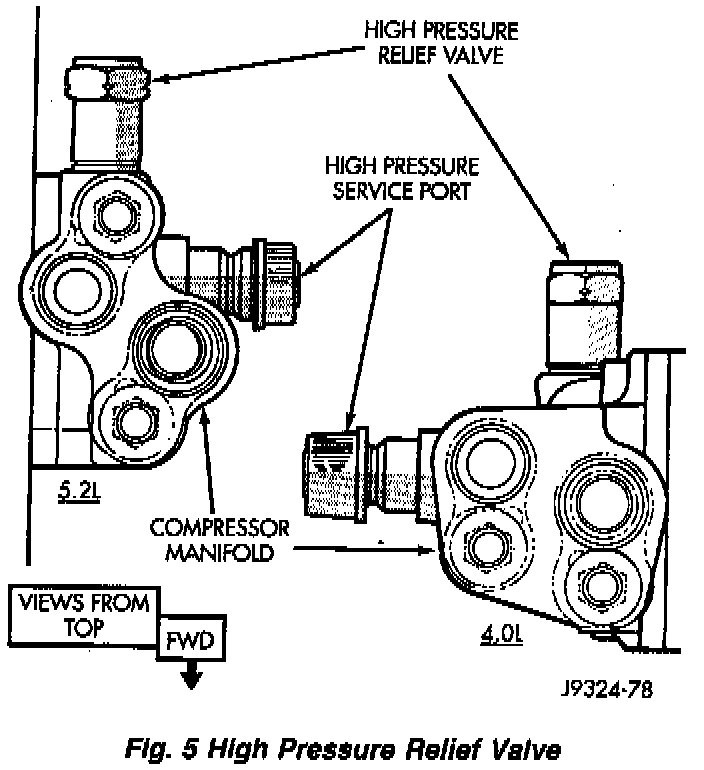

High Pressure Safety Valve HVAC: Description and Operation
Fig.5 High Pressure Relief Valve:

The high pressure relief valve is located on the compressor manifold. This component prevents damage to the air conditioning system if excessive pressure develops.
The high pressure relief valve vents a small amount of refrigerant necessary to reduce system pressure and then reseats itself. Excessive pressure may be caused by condenser air flow blockage, refrigerant overcharge, or air and moisture in the system. The majority of the refrigerant is conserved in the system.
The valve is calibrated to vent at a pressure of 3445-4135 kPa (500-600 psi). If a valve has vented a small amount of refrigerant, it does not necessarily mean the valve is defective. The valve closes with a minimum pressure of 2756 kPa (400 psi).